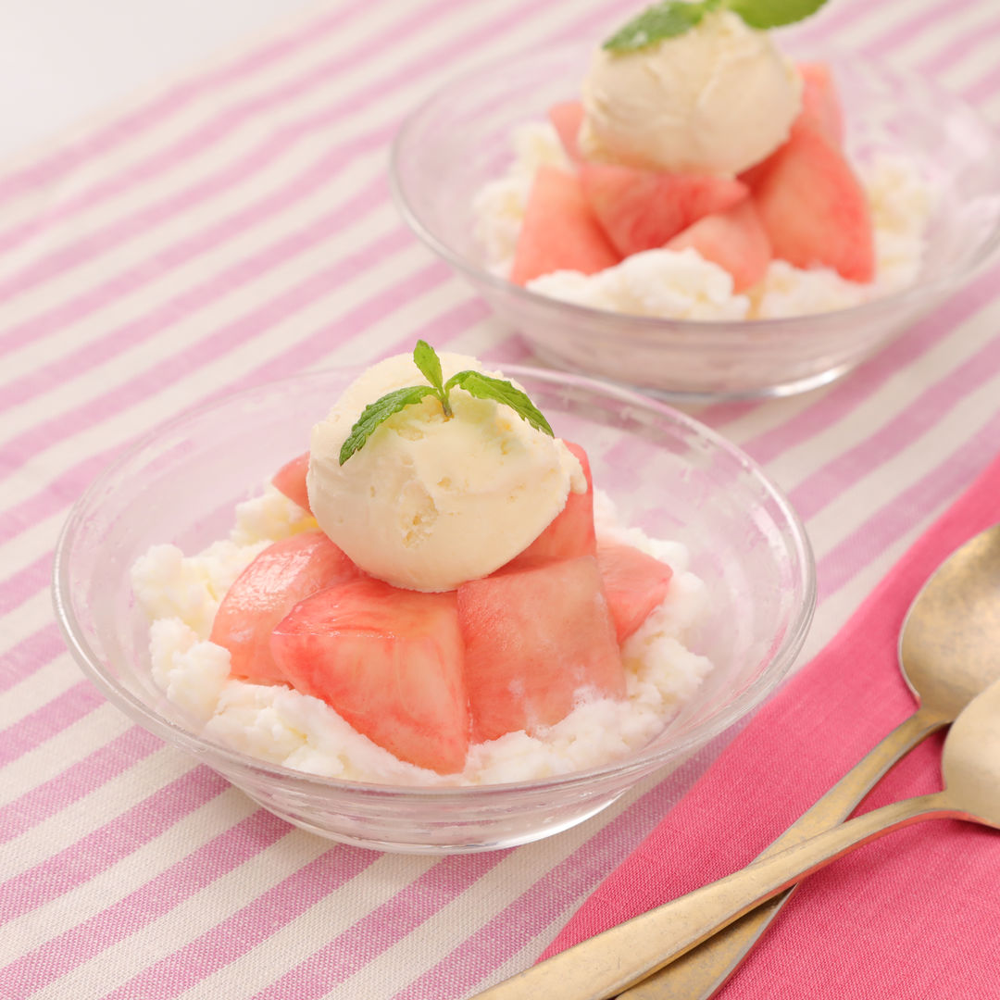

桃かき氷ピンス レシピ

シャリシャリの韓国風かき氷ピンスにたっぷりの桃をのせた見た目も可愛いひんやりスイーツです。
■材料（2人分〔15分・凍らせる時間は除く〕）
- 桃 1個
- アイスクリーム 適量
- ミント 適量
- レモン汁 大さじ1
- 砂糖 大さじ1
- 【A】
- 牛乳 400ml
- 砂糖 30g
- 練乳 大さじ3
■工程
- 【A】を厚手の保存袋に入れて空気を抜くようにして封をしてよく混ぜる。冷凍庫に入れて、時々揉みほぐしながら凍らせる。
- 桃は皮をむいてひと口大に切る。ボウルに桃、レモン汁、砂糖を入れて和える。
- 冷やした器に、<1>を入れてその上に<2>を盛り付ける。アイスクリーム、ミントを添える。
■コツ・ポイント
ピンスを作る時は、厚手の保存袋を使用し、破れないように気をつけてください。時々冷凍庫から取り出してもみほぐすと口当たりがなめらかになります。桃はレモン汁で和えておくことで変色を防ぎます。